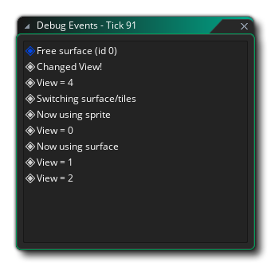
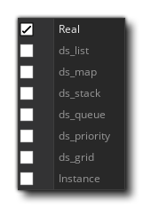
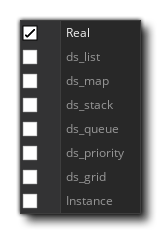

Der Debugger ist ein mächtiges Werkzeug zur Überprüfung Ihres Spiels und ist besonders nützlich, um Fehler und Bugs in Ihrem Code aufzuspüren und zu überprüfen, dass Skripte ausgeführt werden, wann sie sein sollten und dass Variablen und Arrays die erwarteten Werte enthalten... Sie können den Debugger starten, indem Sie Ihr Spiel von GameMaker Studio 2 IDE mit der Schaltfläche Debuggen ausführen  an der Spitze der IDE, oder indem Sie das Build-Menü und wählen Sie "Debuggen".
an der Spitze der IDE, oder indem Sie das Build-Menü und wählen Sie "Debuggen".
Wenn Sie ein Spiel im Debug-Modus ausführen, zeigt die IDE die verschiedenen Tools an, die für den Debugger verfügbar sind: 
Das oben gezeigte Bild zeigt das Standardlayout für den Debugger, aber wie bei anderen Aspekten der IDE können Sie dies an Ihre Bedürfnisse anpassen, nicht benötigte Fenster schließen oder die Größe der benötigten Dokumente und Fenster ändern. Sie können das Debugger-Layout jederzeit zurücksetzen - oder geschlossene Fenster wieder öffnen - über das Debugger- Kontextmenü oben in der IDE: 
Im Folgenden erläutern wir, wofür jeder Abschnitt des Debuggers dient:
Die Grafikansicht zeigt Ihnen eine grafische Darstellung der Speicherauslastung und der Bildfrequenz des Projekts.:
Das Diagramm zeigt den aktuellen und durchschnittlichen Speicherverbrauch sowie den aktuellen und durchschnittlichen FPS über die Zeit. Sie können mit der Taste zoomen
/
zusammen mit dem Mausrad
Wenn Sie den Mauszeiger auf eines der Diagrammelemente positionieren, wird der Wert für dieses Element am ausgewählten Punkt angezeigt.
In der Diagrammansicht werden bestimmte Debug-Ereignisse auch als Punkte entlang der Diagrammlänge angezeigt. Diese Ereignisse werden von GameMaker Studio 2 an bestimmten Punkten während der Ausführung eines Spiels automatisch generiert, um bestimmte wichtige Ereignisse anzuzeigen. Sie können jedoch auch eigene Grafikelemente mithilfe der Funktionen hinzufügen show_debug_message() und debug_event. Systemereignisse werden in einer anderen Farbe als diejenigen Ereignisse gekennzeichnet, die durch Code ausgelöst werden:
Wenn das Spiel über diese Ereignisse im Debug - Modus ausgeführt wird, wird eine Liste aller Ereignisse angezeigt, die zu diesem Zeitpunkt im Spiel ausgelöst wurden, und Sie können die Liste zum Überarbeiten in ein separates Fenster ziehen, indem Sie auf klicken " Klicken, um in einem neuen Fenster zu öffnen " text: 
Die Ressourcenansicht zeigt eine Liste aller im Projekt verwendeten Ressourcen an, die Code- oder DnD™ -Aktionen enthalten können. Dieser Abschnitt funktioniert ähnlich wie der Ressourcenbaum und Sie können die darin enthaltenen Elemente erweitern, um weitere Informationen anzuzeigen, z. B. die verschiedenen Ereignisse für ein bestimmtes Objekt. Sie können dann doppelklicken
auf eine der Ressourcen, um den Code für sie in dem Fenster Codeansicht zu öffnen, in dem Sie Wert und Hinzufügen oder Entfernen von Haltepunkten überprüfen.
In diesem Fenster werden der aktuelle Anruf-Stack der Ereignisse sowie die Zeilennummer für den Code angezeigt, der durchlaufen wird. Der Debugger muss pausiert sein, bevor hier Informationen angezeigt werden.
Die Symbolleiste enthält die Debugger-Steuerelemente zusammen mit einigen grundlegenden Informationen wie Speicherbelegung, dem aktuellen (echten) FPS für das Spiel und einem Indikator, ob der Debugger gerade verbunden ist oder nicht (der Indikator wird grün, wenn er mit einer laufenden Instanz verbunden ist von Ihrem Projekt und rot sonst). Die verfügbaren Steuerelemente sind:
Dies startet das Spiel erneut, nachdem es pausiert wurde (Tastaturkürzel) f5 ). Dies wird das Spiel anhalten (unterbrechen). Startet das Spiel neu. Stoppt das Spiel. Schritt in einen Code-Block oder ein Skript (Tastaturkürzel f11 ). Überqueren Sie einen Codeblock oder ein Skript (Tastaturkürzel) f10 ). Verlassen Sie einen Code-Block oder ein Skript (Tastaturkürzel) + f11 ).
Aktivieren oder deaktivieren Sie Echtzeit-Updates für die Debug-Informationen (standardmäßig deaktiviert). Mit den ersten drei Tasten steuerst du dein Spiel und kannst es jederzeit starten, anhalten, neu starten oder anhalten. Wenn das Spiel entweder durch Klicken auf die Schaltfläche Pause oder von einem Haltepunkt angehalten wird, können Sie die drei "Schritt" -Schaltflächen verwenden, um durch Ihren Code zu gehen. Das bedeutet einfach, dass Sie Ihrem Spiel sagen können, dass es die aktuelle Codezeile ausführen soll, und gehen Sie dann zur nächsten Zeile über. Sie können dann jederzeit eine Zeile Code durch Ihr gesamtes Spiel laufen lassen. Normalerweise würden Sie dazu einfach den Step-In- Button verwenden, aber Sie haben auch einen, um den Code zu überspringen und einen, um den Code zu verlassen. Das Weiterschalten ist nützlich, wenn große Skripts ausgeführt werden sollen. Wenn Sie darauf klicken, wird das gesamte Skript oder der Codeblock als einzelner Schritt ausgeführt und anschließend in der nächsten Zeile angehalten. Wenn Sie aussteigen, werden Sie aus einem Skript entfernt, aber auf einmal) und stoppen Sie den nächsten Schritt, wenn sich der Umfang ändert. Das letzte Symbol ermöglicht es dem Debug-Fenster, seine Daten in Echtzeit zu aktualisieren, sodass Sie sehen können, wie sich Variablen ändern oder Instanzen erstellt und zerstört werden. Beachten Sie, dass dies die Spieleleistung beeinträchtigen kann und nicht alle Informationen in Echtzeit verfügbar sind. Zum Beispiel kann die Renderstatus- Uhr (siehe Abschnitt Uhren, siehe unten) nicht in Echtzeit angezeigt werden.
In der Codeansicht können wir verschiedene Skripts oder Ereigniscodes aus unserem laufenden Projekt sehen und überprüfen. Standardmäßig beginnt diese leer, aber Sie können doppelklicken
Sie können auch die rechte Maustaste verwenden
um das Kontextmenü zu öffnen, mit dem Sie auch Haltepunkte hinzufügen oder entfernen und den ausgewählten Code in die Zwischenablage kopieren können.
Weitere Informationen zu BreakPoints finden Sie weiter unten auf dieser Seite.
Die ganze Idee des Debuggers ist es, dir zu erlauben, jedes Detail deines Spiels zu "beobachten". Dies geschieht mithilfe von "Beobachtungsfenstern", die standardmäßig im Ausgabefenster am unteren Rand der IDE angezeigt werden. Sie können auf jede der verschiedenen Registerkarten klicken, um die darin enthaltenen Uhren zu sehen, von denen einige in Echtzeit aktualisiert werden (wie die Global-Uhren), während andere (wie die lokalen Uhren) das Pausieren des Spiels durch den Debugger erfordern. Wir haben jedes der Uhrenfenster hier einzeln aufgelistet und erklärt, was sie tun:
Das Locals- Fenster zeigt die aktuellen Step-Eigenschaften, die den Namen des aktuellen Ereignisses (oder des laufenden Skripts) enthalten, den Offset im Code der virtuellen Maschine für das aktuelle Skript (das Akronym "PC" steht für "program counter"), das "self" -Instanz, die den Codeblock ausführt, und die "andere" Instanz in dem Ereignis. Dieser letzte Teil ist immer nur gültig, wenn das Ereignis ein Kollisionsereignis ist oder ein Ereignis vorliegt with im Code verwendet. Wenn die Instanz kollidiert, zeigt "other" die andere Instanz (und ihre Variablen) in der Kollision, aber wenn es eine ist with dann wird die "Self" -Instanz diejenige, die den Code ausführt, während "Other" dann die Instanz ist, die tatsächlich die with. Zu allen anderen Zeiten zeigt "andere" einfach dieselben Daten wie "Selbst" an. Nach all diesen Informationen finden Sie dann eine Liste aller lokalen Variablen, die aktuell für den durchlaufenen Codebaustein deklariert sind. Wenn Sie mit der rechten Maustaste klicken
Das Globals- Fenster zeigt eine Liste aller derzeit deklarierten globalen Variablen und ihrer Werte an. Wenn Sie mit der rechten Maustaste klicken
In diesem Fenster können Sie eine bestimmte Variable hinzufügen, die Sie verfolgen möchten. Dies kann eine globale oder Instanzbereichsvariable, eine eingebaute Variable oder sogar eine Array- oder Datenstruktur sein. Wenn der Instanzcode, der durchschritten wird, die überwachte Variable enthält, wird sie hier angezeigt. Dies bedeutet, dass Sie einen Wert problemlos verfolgen können, ohne ihn im Fenster "Lokal" oder "Globals" suchen zu müssen. Wenn Sie mit der rechten Maustaste klicken
Wie der Name andeutet, zeigt dieses Fenster alle Instanzvariablen, lokale Variablen und eingebaute Variablen, die mit der aktuell im Source-Fenster durchlaufenen Instanz verknüpft sind (wenn auf eine Instanz mit dem Schlüsselwort "other" oder der Referenz verwiesen wird) with Anweisung, dann zeigt dieses Fenster stattdessen die Eigenschaften der Instanzen).
Wenn Sie alle Instanzen sehen müssen, die sich gerade im Raum befinden, können Sie dieses Fenster auswählen und es wird aufgelistet. Sie können auch den Status aller integrierten oder Instanzvariablen sehen, die sie haben, und Sie können mit der rechten Maustaste klicken
In diesem Fenster können Sie eine Instanz aus Ihrem Spiel auswählen. Dies geschieht durch einfaches Pausieren des Spiels und anschließendes Klicken auf eine sichtbare Instanz innerhalb des Spielfensters. Für die Instanz, die unter dem Mauszeiger gefunden wird, werden die Informationen im Fenster Ausgewählte Instanz angezeigt, in dem die eingebauten und Instanzvariablen angezeigt werden, genau wie im Fenster Instanzen.
Diese Uhr zeigt Ihnen alle Informationen an, die für den Status des aktuellen gerenderten Frames zur Verfügung stehen, z. B. die Alpha oder Füllfarbe des Draw. Dies kann nicht in Echtzeit aktualisiert werden, so dass Sie das Spiel anhalten müssen, um die Frame-Details zu erhalten und zu aktualisieren.
Mit dieser Uhr können Sie genau sehen, was auf die Oberflächen gezeichnet wird, die Sie in Ihrem Spiel haben (einschließlich der application surface ) sowie die Textur Seiten, die im Speicher sind. Sie können aus Texturen oder Oberflächen am unteren Rand der Uhr auswählen und dann mit der Maus über die Textur oder Oberflächen-ID gehen, um sie in einem Popup-Fenster anzuzeigen.
Beachten Sie, dass der Debugger angehalten werden muss, bevor diese aktualisiert werden.
In diesem Fenster können Sie das aktuelle Systemprofil für das getestete Spiel sehen, in dem Sie alles in Ihrem Spiel von ganzen Ereignissen bis zu einzelnen Funktionsaufrufen überprüfen können, um zu sehen, wie sie ausgeführt werden, und um etwaige Problembereiche oder Engpässe zu erkennen. Weitere Informationen zum Profiling finden Sie weiter unten auf dieser Seite.
Wenn Sie Puffer in Ihrem Spiel initialisiert haben, zeigt Ihnen dieses Fenster die Pufferdaten. Sie können einen beliebigen Puffer auswählen, indem Sie den Puffer-ID- Wert festlegen, der für den ersten in Ihrem Spiel erstellten Puffer bei 0 beginnt und für jeden weiteren Puffer um 1 erhöht wird.
Wenn Sie mit der rechten Maustaste klicken


Es ist wichtig zu beachten, dass während der Ausführung des Spiels die Debug-Fenster standardmäßig nicht mit Variablenwerten und anderen Details aktualisiert werden. Daher müssen Sie entweder die Schaltfläche " Pause" verwenden  im Debugger, um das Spiel anzuhalten, bevor lokale Daten, Globals und andere Daten verfügbar sind, oder aktivieren Sie die Aktualisierung in Echtzeit über die Symbole oben
im Debugger, um das Spiel anzuhalten, bevor lokale Daten, Globals und andere Daten verfügbar sind, oder aktivieren Sie die Aktualisierung in Echtzeit über die Symbole oben  . Die einzige Ausnahme von dieser Regel ist die Profilansicht, die in Echtzeit aktualisiert wird, wenn sie unabhängig vom Echtzeitschalter aktiviert ist, da sie über einen eigenen Ein- / Ausschalter verfügt.
. Die einzige Ausnahme von dieser Regel ist die Profilansicht, die in Echtzeit aktualisiert wird, wenn sie unabhängig vom Echtzeitschalter aktiviert ist, da sie über einen eigenen Ein- / Ausschalter verfügt.
Datentypen
Wenn Sie in einem der Fenster eine Variable beobachten, kann es sich um einen von mehreren Datentypen handeln. Aufgrund der Art und Weise, in der GameMaker Studio 2 bestimmte Dinge speichert, weiß der Debugger nicht immer genau, was die Variable enthält. Dies liegt daran, dass die internen ID-Werte für Datenstrukturen oder Instanzen Ganzzahlen sind. Daher weiß der Debugger nicht immer, ob der in einer Variablen gespeicherte ganzzahlige Wert für eine Datenstruktur oder eine Instanz oder einfach ein ganzzahliger Wert ist. Aus diesem Grund können Sie mit der rechten Maustaste klicken  auf einem beliebigen Variablenwert und erhalten ein Popup-Fenster, das die verfügbaren Datentypen auflistet, die diese Variable sein könnte. 
auf einem beliebigen Variablenwert und erhalten ein Popup-Fenster, das die verfügbaren Datentypen auflistet, die diese Variable sein könnte. 
Strings und Arrays erlauben diese Option nicht, und es ist erwähnenswert, dass selbst wenn eine Datenstruktur in einer Instanzvariable gespeichert ist, ihre ID-Nummer global ist. Wenn Sie also vier Instanzen haben und jede eine ds_list (zum Beispiel) erstellt, Jede Liste hat eine ID von 0 bis 3, und sie sind nicht alle 0.
Nachdem Sie Ihren Datentyp ausgewählt haben, zeigt die Variable die Einträge in der Struktur an, indem Sie einfach auf den kleinen klicken  neben seinem Namen. Dadurch werden die Strukturinhalte erweitert und Sie können sie im Fenster "Watches" auch ändern.
neben seinem Namen. Dadurch werden die Strukturinhalte erweitert und Sie können sie im Fenster "Watches" auch ändern.
Haltepunkte
Ein Haltepunkt ist ein Platz in Ihrem Projektcode, an dem Sie anhalten möchten, damit Sie sehen können, was vor sich geht. Wenn der Debugger ausgeführt wird, können Sie durch Klicken mit der linken Maustaste jederzeit und in jedem Code oder Skriptblock Haltepunkte hinzufügen oder entfernen  in der Gosse (wo die Zeilennummern sind), oder Sie können die rechte Maustaste verwenden
in der Gosse (wo die Zeilennummern sind), oder Sie können die rechte Maustaste verwenden  um das Kontextmenü zu öffnen, in dem Sie auch Haltepunkte hinzufügen oder entfernen können:
um das Kontextmenü zu öffnen, in dem Sie auch Haltepunkte hinzufügen oder entfernen können:

Breakpoints können auch über die GameMaker Studio 2 IDE eingestellt werden. Wenn Sie Ihr Projekt schreiben, können sie jederzeit mit hinzugefügt oder entfernt werden f9 (oder mit der rechten Maustaste  und Auswahl von "toggle breakpoint", entweder für eine Aktion im Objektfenster oder für eine Zeile in einem Code-Editor-Fenster. Jetzt, wenn Sie Ihr Spiel im Debug-Modus ausführen, wird es an dem von Ihnen definierten Punkt (oder den Punkten) pausieren. Breakpoints, die von der IDE gesetzt werden, werden zusammen mit Ihrem Projekt gespeichert und bleiben über verschiedene Runs bestehen, bis sie wieder entfernt werden. Wenn Sie jedoch im Debugger einen Breakpoint zu Ihrem Code hinzufügen, geht dieser verloren, nachdem das Modul geschlossen oder ein neuer Testlauf gestartet wurde. Beachten Sie, dass alle Haltepunkte im Ausgabefenster angezeigt werden, wo sie aktiviert oder deaktiviert oder sogar entfernt werden können.
und Auswahl von "toggle breakpoint", entweder für eine Aktion im Objektfenster oder für eine Zeile in einem Code-Editor-Fenster. Jetzt, wenn Sie Ihr Spiel im Debug-Modus ausführen, wird es an dem von Ihnen definierten Punkt (oder den Punkten) pausieren. Breakpoints, die von der IDE gesetzt werden, werden zusammen mit Ihrem Projekt gespeichert und bleiben über verschiedene Runs bestehen, bis sie wieder entfernt werden. Wenn Sie jedoch im Debugger einen Breakpoint zu Ihrem Code hinzufügen, geht dieser verloren, nachdem das Modul geschlossen oder ein neuer Testlauf gestartet wurde. Beachten Sie, dass alle Haltepunkte im Ausgabefenster angezeigt werden, wo sie aktiviert oder deaktiviert oder sogar entfernt werden können.
Profilerstellung
Mit dem Debugger können Sie Ihren Code durchgehen und Probleme mit der Codebasis finden. Manchmal müssen Sie jedoch nach subtileren Details suchen, um Ihre Spiele richtig zu optimieren. Die Profil- Option hilft Ihnen dabei, indem Sie Ihnen eine Leistungsübersicht geben, die die benötigte Zeit für den Aufruf von Funktionen, Skripten und sogar die Dauer eines bestimmten Ereignisses angibt. 
Neben dem Hauptfenster mit den verschiedenen aufgerufenen Ereignissen, Skripten und Funktionen haben Sie auch folgende Möglichkeiten, den Profiler zu verwenden:
Dies ist die Schaltfläche zum Aktivieren oder Deaktivieren des Profilers. Wenn aktiviert, startet der Profiler und Sie werden sehen, dass Ereignisse, Skripte und Funktionen im Hauptfenster zusammen mit verschiedenen Datenwerten für jede von ihnen aufgelistet werden. Wie diese Daten angezeigt werden, hängt von der Zeitanzeige und dem Ansichtsmodus ab (beide weiter unten auf dieser Seite erklärt).
Mit diesem Kontrollkästchen können Sie zwischen der durchschnittlichen Zeit und der absoluten Zeit für den Profiler wechseln. Wenn diese Option nicht aktiviert ist, werden die im Hauptfenster angezeigten Werte die Gesamtanzahl der Aufrufe an die Funktion, das Skript oder das Ereignis und die Gesamtzeit sein, die im Verlauf des Profils (in Mikrosekunden ) verstrichen ist. Wenn Sie dies jedoch aktivieren, zeigen diese Spalten die durchschnittliche Zeit pro Schritt für jede Funktion, jedes Skript oder Ereignis und die durchschnittliche Anzahl der Aufrufe an.
In diesem Menü können Sie den Ansichtsmodus wählen, der entweder von oben nach unten oder von unten nach oben gehen kann.
Wenn Sie den Top-Down-Ansichtsmodus auswählen, wird das Profil von oben nach unten (mehr oder weniger identisch mit der Callstack-Hierarchie) angezeigt, sodass das Ereignis, dann das Skript und dann alle Funktionen angezeigt werden. Beachten Sie, dass Sie doppelklicken können
Wenn Sie den Bottom-Up-Ansichtsmodus auswählen, werden die Dinge von unten nach oben angezeigt, sodass Sie alle Funktionen und Skriptaufrufe einzeln sehen können. Wenn Sie diesen Ansichtsmodus verwenden, klicken Sie auf
Das Ansichtsziel ermöglicht Ihnen die Auswahl zwischen der Anzeige der Projekt-GML (Ereignis- und Codedaten), der Hintergrund-Engine-Prozesse oder beiden. Wenn Sie "GML" wählen, erhalten Sie die Ereignisse, Funktionen und Skripte, die bei jedem Schritt aufgerufen werden, während die Ansicht "Engine" nur die für das Projekt erforderlichen Engine-Aufrufe anzeigt, sodass Sie Engpässe in der Art Ihres Projekts erkennen können behandelt Dinge. Wenn Sie "Beide" auswählen, werden beide Datensätze angezeigt. Beachten Sie jedoch, dass die verschiedenen Script- und Funktionsaufrufe in Kombination mit der Ansicht "Bottom Up" in den Engine-Aufrufen verschachtelt sind und Sie auf klicken müssen
Die Profildaten werden in vier Spalten angezeigt, und wenn Sie auf eine davon klicken, werden die Daten gemäß den Spaltenkriterien sortiert.

- Name - Dies ist der Name des Ereignisses, des Skripts oder der Funktion, die aufgerufen werden daneben, um weitere Aufrufe zu bezeichnen oder von ihm (abhängig von dem gewählten Ansichtsmodus). Sie können doppelklicken auf einem der Namen, um den Codeblock oder das Skript im Quellfenster zu öffnen. Durch Klicken auf den oberen Rand dieser Spalte werden die Namen in alphabetischer Reihenfolge sortiert.
- Zeit - Dies zeigt entweder die Gesamtzeit an, die eine Funktion (oder ein Skript oder Ereignis) während der Profilerstellung belegt hat, oder die durchschnittliche Zeit, die jeder Schritt für den Aufruf benötigt hat (abhängig von der gewählten Zeitanzeigeoption) und in der angezeigt wird Mikrosekunden.
- Anrufe - Hier können Sie entweder die Gesamtzahl der Anrufe für das angegebene Ereignis, die Funktion oder das Skript oder die durchschnittliche Anzahl der Anrufe in einem einzigen Schritt anzeigen (wiederum abhängig von der ausgewählten Option Zeitanzeige).
- Schritt% - Der hier angezeigte Wert ist der Gesamtprozentsatz eines einzelnen Schritts, den der Anruf ausgeführt hat.
Sie können die Profildaten jederzeit mit der rechten Maustaste exportieren  Klicken Sie auf das Fenster und wählen Sie die Option In Datei exportieren. Dadurch wird die aktuelle Ansicht (nach dem Erweitern aller Knoten) in geschrieben .csv Format, das Sie dann in jede Tabellenkalkulation wie zB Excel laden können.
Klicken Sie auf das Fenster und wählen Sie die Option In Datei exportieren. Dadurch wird die aktuelle Ansicht (nach dem Erweitern aller Knoten) in geschrieben .csv Format, das Sie dann in jede Tabellenkalkulation wie zB Excel laden können.